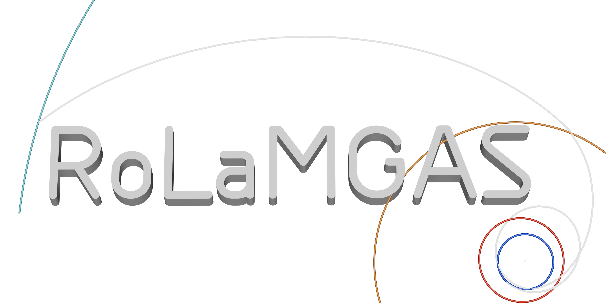

What is C3?
The square of departure hyperbolic excess speed, in km²/s². Lower C3 generally asks less of the launch vehicle. It is energy, not a burn magnitude.
MISSION DESIGN / PUBLIC PREVIEW
One destination. Many ways to get there. Explore real saved trajectory candidates, follow their planetary flybys, and find a route worth taking further.
Explore the trajectories01 / THE FLIGHT LIBRARY

A browser gallery of precomputed results.
Your own mission searches run locally in the desktop app.
THE TRAJECTORY EXPLORER
Heliocentric · Ecliptic J2000 · Dates in TDB
SAVED TRAJECTORY
Select a candidate to inspect its route.
| Event | Calendar date · TDB | Julian date · TDB | Details |
|---|
Preview curves are sampled for display. Playback interpolates between saved points; it does not perform a new propagation. Lambert previews meet at planet centers and should not be used as flyby render files.
These are design opportunities, not operational flight plans. Saved Lambert examples passed their original configured speed and turn screens. Explore the model notes before comparing costs.
02 / BUILD YOUR OWN MISSION
Choose a destination, try an assist sequence, and watch candidates appear as the search runs. Refine a favorite. Add another flyby. Export your mission to Celestia.
The solver runs on your CPU. No AI service, API key or subscription is required. JPL Horizons supplies new target data; cached ephemerides work offline.
RoLaMGAS / WINDOWS PREVIEW
142 MiB · Preview v0.1 · Python included
Release notes, source & checksums ↗The square of departure hyperbolic excess speed, in km²/s². Lower C3 generally asks less of the launch vehicle. It is energy, not a burn magnitude.
Saved DSMs, powered flybys and targeting corrections where modeled. Launch injection and terminal capture are excluded. They require separate budgets.
It measures excess speed relative to the destination. A slower arrival can make capture easier, often at the price of a longer trip or more assists.